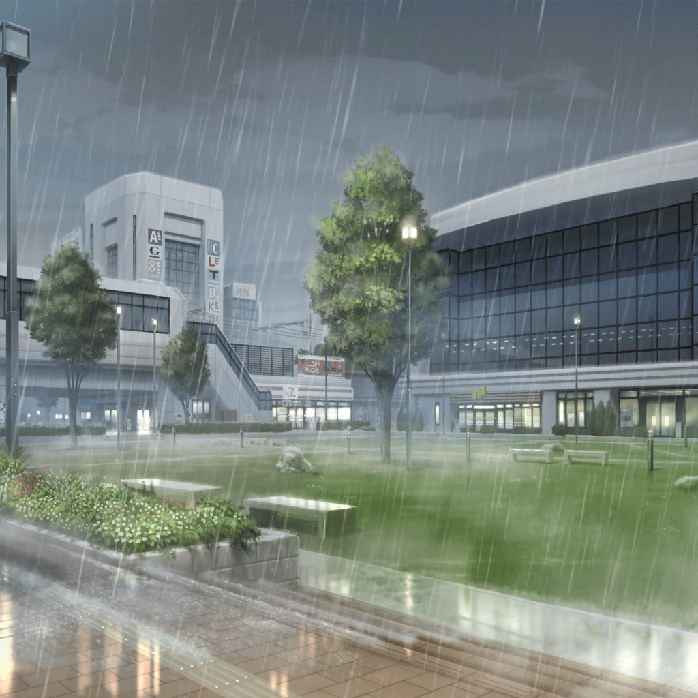

数日後
駅前
麻弥
ぱ、Pastel＊Palettes、よろしくお願いしまーっす……
日菜
……チケット売り始めて、今日でもう何日くらいだっけ？
イヴ
えっと……５日くらいですね
日菜
５日でこの枚数かあ……
彩
おねがいしまーす！

日菜
ん……雨……？
麻弥
すごい雨ですね！
急いで撤収しましょう！
日菜
え？ 雨がすごくて声が聞こえないよー！
イヴ
今日は、終わりです！ 帰りましょう！
日菜
おっけー！
彩ちゃんも、帰ろう！
彩
お願いしまーす！
イヴ
アヤさん！ 帰りましょう！
彩
私は、もう少し頑張ってみるよ。みんなは先に帰ってて
日菜
彩ちゃん！ こんな天気じゃ人通りもないから意味ないよ！
風邪でもひいたら大変だよー！
彩
私は……やらなきゃ、ダメだから。
大丈夫、みんなは先に戻ってて
イヴ
アヤさん！
彩
お願いしまーす！
日菜
彩ちゃん！
彩
……止めないで。
……お願い
一同
……
日菜
……帰ろう
彩
チケット、販売中です！
Pastel＊Palettesを……どうかお願いします！
彩
（雨に声がかきけされて、全然届かない）
彩
……お願い、します！

芸能事務所 会議室
日菜
ふわあ～めちゃめちゃびしょ濡れだ～！
麻弥
今、タオルもらってきますねっ
麻弥
……っと、すいません！
って、千聖さん！
千聖
お疲れ様。
……３人とも、ずぶ濡れだけどどうしたの？
イヴ
チサトさん！ さっきまで、チケットをみんなで売ってたんです。
そしたら、すごい雨が降ってきて……
千聖
……彩ちゃんは？
イヴ
それが……
日菜
……彩ちゃん、『私はやらなきゃダメだから』って言って、
きかなくて……
麻弥
彩さんは、自分のできることは全部やりたいと、
後悔したくないとそう言っていました
千聖
だから、まだチケットを売っているというの？
麻弥
……はい。彩さんの強い気持ちの前では
何を言ってもきかないだろうと思って……
すみません、止められませんでした
イヴ
アヤさん、少し追い詰められている気がします。
やっぱり、迎えにいったほうが……！
千聖
……こういうときはスタッフさんにお任せしたほうがいいわ。
この話は私からスタッフさんに伝えておくから
イヴ
チサトさん、どこへ！？
千聖
ごめんなさい。私は次の仕事があるので失礼するわね

千聖
（どうして……どうしてそこまで、あなたは……）
駅前
彩
（バカだなあ、私。日菜ちゃんの言うとおり、
こんな日に誰もチケットなんて買わないよね……）
彩
お願いします……
彩
（雨に声がかき消されて、どこにも、誰にも届かない。
でも、このまま声をあげ続けていないと……）
彩
（私の想いも、夢も……
このまま雨にかきけされちゃいそうな気がして……）
彩
……っ
千聖
！ 彩ちゃん……あんなところに……！
彩
どうか……私達の歌を……
千聖
聞いてください！
彩
……千聖……ちゃん……？
千聖
Pastel＊Palettesのライブのチケットを販売しています。
私達の歌を、聞きにきてください！
彩
……どうして……
千聖
どうしたの？ チケット、まだこんなに残っているのよ？
後悔したくないんじゃなかったの？
彩
……
千聖
雨で声がよく聞こえないわ。
もっと大きい声を出さないと、誰にも届かないわよ
彩
……うんっ！
千聖
Pastel＊Palettes、よろしくお願いします！
彩
お願いします！
彩・千聖
どうか、私達の歌を聞いてください！！